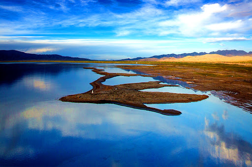
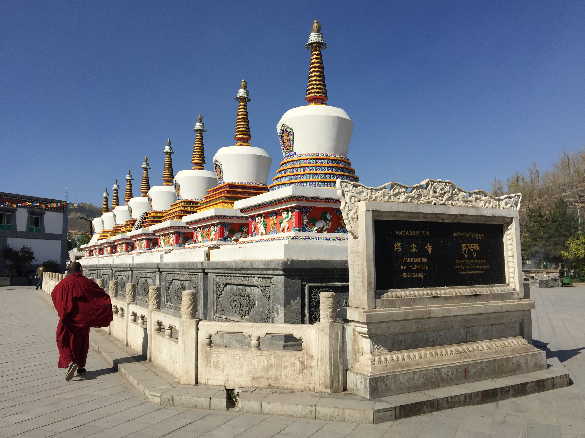
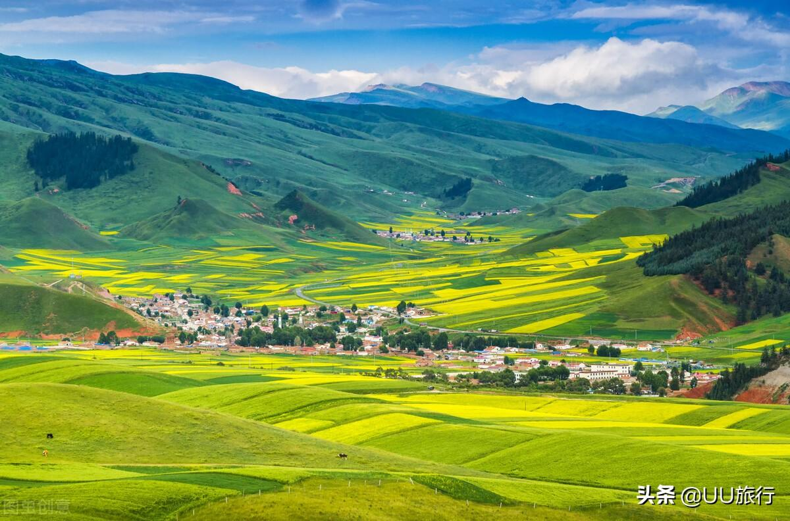

Qinghai Lake, 150 kilometers west of Xining, is China’s largest inland lake and saltwater lake—covering 4,583 square kilometers, its turquoise waters stretch to meet the snow-capped Qilian Mountains in the distance. It’s a UNESCO World Heritage Site and a paradise for nature lovers. Key highlights include Bird Island (a sanctuary for over 100 bird species, including bar-headed geese, that migrate here in spring-summer), Rapeseed Flower Fields (golden blooms that cover the lake’s shores from June to August), and Cycle Paths (a 360-kilometer loop around the lake—rent a bike for a 2–3 day ride to soak in the scenery). You can also take a boat tour (100 CNY/adult) to the lake’s center, where the water is so clear you can see fish swimming below. In winter, the lake freezes over, creating a magical “ice mirror” reflecting the sky.
Summer (June–August): Rapeseed flowers bloom; birds gather at Bird Island; mild temperatures (15°C–22°C).
Morning (8:00 AM–10:00 AM): Soft light on the lake; fewer tourists at Bird Island.
Entry Fee: 100 CNY/adult (peak season: June–August); 50 CNY/adult (off-season: September–May); free for kids under 1.2m.
Bird Island Extra Fee: 50 CNY/adult (June–August only).
Bike Rental: 50–100 CNY/day (standard bike); 150–200 CNY/day (electric bike, easier for plateau riding).

Ta’er Temple, 25 kilometers southwest of Xining, is one of Tibet’s six major Buddhist monasteries and a key site of the Gelug (Yellow Hat) sect. Founded in 1560, it’s surrounded by green hills and dotted with golden-roofed halls, prayer wheels, and white stupas. The monastery’s highlights include the Great Hall of Golden Tiles (its roof covered in 13,000 gold plates, glowing under the sun), the Buddha Hall (housing a 10-meter-tall statue of Sakyamuni Buddha), and the Wall Paintings (colorful murals depicting Buddhist stories, made with mineral pigments that last for centuries). You can watch monks chanting in the halls (morning and afternoon), spin prayer wheels to accumulate merit, or walk along the monastery’s quiet paths lined with juniper trees. The combination of Tibetan architecture and natural hills makes it a serene nature-and-culture spot.
Autumn (September–October): Cool (10°C–18°C); clear skies make the golden roofs shine brighter.
Morning (9:00 AM–11:00 AM): Watch monks’ morning chanting; fewer crowds.
Entry Fee: 80 CNY/adult; 40 CNY/students (with ID); free for kids under 1.2m.
Guided Tour (1 hour): 60 CNY/group (available in Chinese and English; explains Buddhist culture and monastery history).
Prayer Wheel Experience: Free (bring small change to donate if you wish—optional).

The Qilian Mountains, 300 kilometers northwest of Xining, are a majestic mountain range stretching across Qinghai and Gansu—known for their snow-capped peaks (some over 5,000 meters), green grasslands, and crystal-clear lakes. The most accessible section from Xining is Zhuoer Mountain (a 4,120-meter peak with a cable car and viewing platforms offering panoramic views of the range) and Qinghai Lake Grasslands (rolling meadows at the mountains’ foot, where yaks and sheep graze freely). In summer, the grasslands are covered in wildflowers, and Tibetan yurts offer visitors a chance to taste butter tea and lamb. The air is crisp and fresh, and the silence (broken only by wind and bird calls) makes it a perfect escape from city life. It’s a popular day trip for those who want to experience the Qinghai-Tibet Plateau’s raw natural beauty.
Summer (July–August): Grasslands are green; wildflowers bloom; mild (12°C–20°C).
Afternoon (2:00 PM–4:00 PM): Snow-capped peaks are visible (morning mist often lifts by noon).
Entry Fee (Zhuoer Mountain): 60 CNY/adult; 30 CNY/students; free for kids under 1.2m.
Cable Car (Zhuoer Mountain, One-way): 50 CNY/adult; 25 CNY/children (1.2m–1.4m).
Tibetan Yurt Experience: 80–120 CNY/person (includes butter tea, yogurt, and a short horse ride).